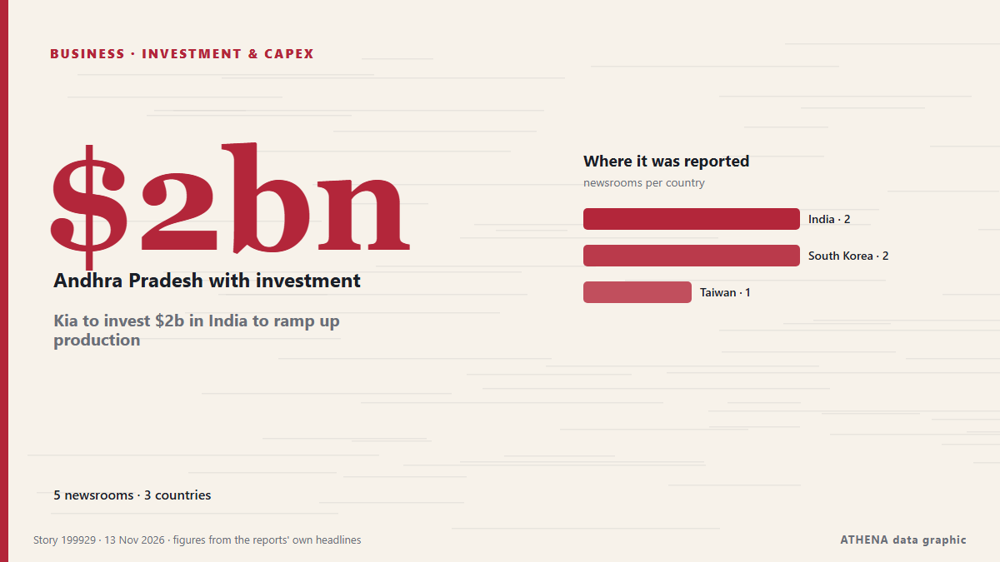

Investissements
SponsoriséPrésenté par  Cybernetics and Artificial Intelligence Lab Welcome to the Cybernetics and Artificial Intelligence Laboratory, established at the Department of Business Administration of the National and Kapodistrian University of Athens. The lab is headed by Professor Dimitrios Thomakos. The lab aims to do research that can be published in top venues. Our research uses tools and methods of Artificial Intelligence, and lies in the following areas: - Forecasting - Decision making - Cyber security - Finance We are always looking forward to collaborating with exceptional students!
Cybernetics and Artificial Intelligence Lab Welcome to the Cybernetics and Artificial Intelligence Laboratory, established at the Department of Business Administration of the National and Kapodistrian University of Athens. The lab is headed by Professor Dimitrios Thomakos. The lab aims to do research that can be published in top venues. Our research uses tools and methods of Artificial Intelligence, and lies in the following areas: - Forecasting - Decision making - Cyber security - Finance We are always looking forward to collaborating with exceptional students!
| 31 oct. | 0 |
|---|---|
| 1 nov. | 0 |
| 2 nov. | 0 |
| 3 nov. | 0 |
| 4 nov. | 0 |
| 5 nov. | 0 |
| 6 nov. | 0 |
| 7 nov. | 0 |
| 8 nov. | 2 |
| 9 nov. | 2 |
| 10 nov. | 6 |
| 11 nov. | 3 |
| 12 nov. | 9 |
| 13 nov. | 0 |
Les titres sont affichés en anglais, tels que publiés.

Kia to invest $2b in India to ramp up production
South Korean automaker Kia Corp. said Friday it plans to invest $2 billion in a second manufacturing plant in India to expand its production capacity in the growing automobile market. de Korea Herald
Brazil’s WEG chooses Dharmapuri for ₹2,000-crore global manufacturing facility
The project has the potential to generate around 3,000 jobs. de The Hindu
Finland to allocate over EUR 37M for Ukraine’s reconstruction
Finland’s Ministry for Foreign Affairs is allocating €37.3 million to support Ukraine’s reconstruction under the Strategic Investment and Support for Ukraine (SISU) program. de Ukrinform (English)
EU explores deeper Syria partnership, flags concern over Russia role
BRUSSELS/DAMASCUS, Nov 11 - The European Union is weighing a broad upgrade in ties with Syria, including security sector reform, investment and a revival of a long-frozen trade accord, according to… de The Straits Times
Future Investment Initiative sets news dates for postponed 10th edition
RIYADH: The 10th edition of the Future Investment Initiative will take place in Riyadh from Oct. de Arab News
Hombolo project set to be investment hub
DODOMA: THE government plans to transform Dodoma into a modern, internationally competitive city and a major hub for economic activities, tourism and investment through the proposed Hombolo Smart… de Daily News
HELLENiQ Energy plans investment of over €1bn in Romania by 2030
HELLENiQ ENERGY Holdings plans to invest more than €1 billion in Romania by 2030, expanding its renewable energy and battery storage operations as part of its strategy to strengthen its presence… de Cyprus Mail
Pakistan courts global investors at Minerals Investment Forum as provinces outline opportunities
Associated Press Of Pakistan Islamabad to host Minerals Investment Forum on Nov 12-13 to showcase immense potential The Forum will provide global investors an essential platform to capitalize on… de APP (Associated Press of Pakistan)
Maldives president reaffirms ban on Israeli passport holders entering country
Mohamed Muizzu says proposed immigration law would maintain unconditional ban, regardless of developments in Gaza. de Anadolu Agency (English)
Taiwan's proposed Amazon Leo network would broaden emergency communications
Taiwan's proposed 2027 government budget would fund a low Earth orbit satellite network using Amazon Leo, adding backup communications for critical sites during disasters and emergencies. de DigiTimes Asia
SOCAR's STAR refinery to expand diesel production capacity in Türkiye
SOCAR-owned STAR Oil Refinery in Türkiye is launching a new investment project worth approximately 6 billion Turkish lira ($120 million) to increase its diesel production capacity by 600,000 tonnes… de AzerNews
Edo Deepens Electricity Reforms, Courts Private Investment
Felix Omoh-Asun in Benin City The Edo State Government is stepping up efforts to attract private investment into its electricity sector as part of a broader strategy to expand power. de ThisDay (Nigeria)
Central America grapples with footballing decline
A lack of investment leaves aspiring players with few chances to reach the professional game. de Express Tribune
Wool growers to vote on new levy next year
It would invest in work that supports greater demand and value for New Zealand wool. de BusinessDesk
SA business leaders push for investments in Africa at B20 USA Summit
The event confronts Africa's challenge of the gap between perceived and actual investment risk. de SABC News
Pakistan, Saudi Arabia investors launch fund to boost trade, investment
Three-fourths of the fund will be invested in Pakistan, while the rest will be invested in Saudi Arabia. de Express Tribune